Flejsborg
Grobkörniger, blauschwarzer Granit mit rotem Korn
Höhe: 150 cm
Größte Breite: 60 cm
Größte Dicke: 28 cm
Runenhöhe: 7 / 8,5 / 11 cm
Runeninschrift :
Thorkil setzte diesen Stein zum Andenken an seinen Vater, ... Sohn

33 - Flejsborg - Letztes Update 24.08.2025
Listennummer : DR 132 / DK NJy 64
| Navidaten: 56.86595 9.34247 oder: Gattenvej 23, 9640 Farsø |
Transliteration: þurkal : sati : stia : aft : ... sun : faþur : sin :
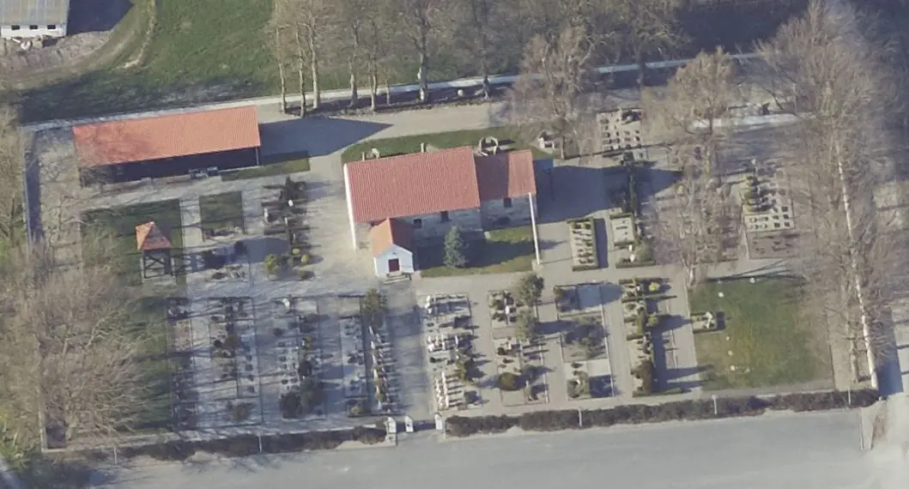
Das ist ein Luftfoto vom 20.04.2023 von Skråfoto - Lizenz: CC BY 4.0 - das die Kirche von Flejsborg zeigt. Skråfoto ist eine Webanwendung, die von Klimadatastyrelsen weltweit kostenlos bereitgestellt wird. Die Aufnahmen werden seit 2017 alle zwei Jahre erneuert und neben einer Senkrechtaufnahme wird ein Schrägbild aus jeder Himmelsrichtung angeboten, das man über eine Adresssuche aufrufen kann.
Die Kirche mit dem Runenstein in Flejsborg, die n-ö der Gemeinde im freien Feld liegt, habe ich schon mehrfach besucht. Am Dienstag, 21.08.1990, war die Kirche leider geschlossen. Beim nächsten Besuch am 10.08.1996 hatte ich mehr Glück - siehe Foto im linken Frame. Genau wie am Freitag dem 23.08.2013. Im Rahmen meiner diesjährigen, mehrwöchigen Jütland Wikingertour stand ich am Samstag, 04.06.2022, wieder vor verschlossener Tür. Über eine E-Mail Anfrage konnte ich eine Absprache treffen, worauf ich am Dienstag, 14.06.2022, eine geöffnete Kirche antraf, da der Graver vor Ort mit Arbeiten befasst war. Dabei habe ich diverse digitale Fotografien gefertigt.
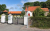 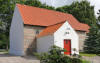 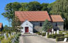 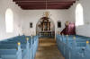 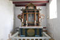 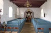


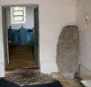 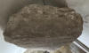 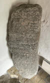 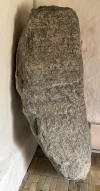 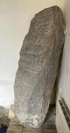


Der Runenstein wurde im Jahre 1851 von Architekt Gottlieb Bindesbøll (Michael Gottlieb Birkner Bindesbøll - *05.09.1800 - 14.07.1856 - link-LIVES)
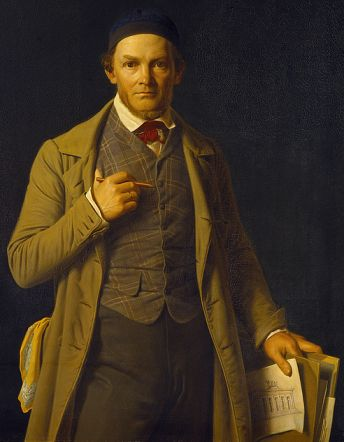
Bildquelle: Wikipedia - Lizenz: Public Domainentdeckt. Er fand ihn unter dem Glockenturm auf der östlichen Seite der Kirche, teilweise verdeckt durch Holzwerk. Er fertigte am 30.06.1851 eine Zeichnung und meldete den Fund an P. G. Thorsen. Seine Hinterlassenschaft in der Königlichen Bibliothek in Kopenhagen - unter NKS 3296 verwahrt - bezeichnet als: P. G. Thorsens optegnelser, tegninger m.m. vedrørende runer og runemindesmærker - überführt aus der Kopenhagener Universitätsbibliothek 1929 - Gemäß Ministerialschreiben vom 04.03.1929; früher benannt als Additamenta 612 kvart - befindet sich in mehreren Pappschachteln. In der Schachtel 17 fand ich bei meinem Besuch in der Königlichen Bibliothek in Kopenhagen am 27.09.2022 diese Zeichnung und durfte sie fotografieren.

Von der Fundstelle wurde der Runenstein wohl am 30.11.1855 - laut handschriftlichem Eintrag auf der o.a. Zeichnung oben - herausgenommen und ins Waffenhaus verbracht, aber zunächst nur darin abgelegt. Irgendwann nach dem 01.07.1870 und vor dem 08.08.1878 wurde er dann darin so aufgestellt, wie er heute noch anzutreffen ist. Die Spitze des Steins ist abgeschlagen. Die Inschrift ist echt schlecht zu erkennen. Die der Steinkante folgende rahmenlose Inschrift (Konturanordnung) beginnt rechts unten und endet in der Mitte der linken Steinseite. Die Textlücke ist auf das fehlende Stück an der abgeschlagenen Spitze zurückzuführen. Nach der beginnenden Biegung der Rahmenlinien zu urteilen, müssen die Namen sowohl des Verstorbenen als auch des Vaters des Verstorbenen kurz gewesen sein.
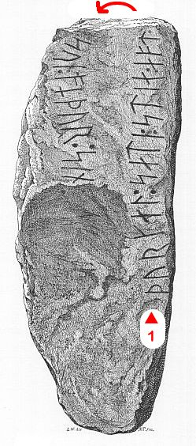
Der Runenstein wird auf die Zeit 970 - 1020 datiert.
Auch Prof. Jens Jacob Asmussen Worsaae (*14.03.1821 - 15.08.1885, dänischer Archäologe und Vorgeschichtler - link-LIVES - Bestattungsprotokoll)
 Bildquelle: Fotografie
zw. 1863-1900 von Fotograf Budtz Müller
(*26.12.1837 -
30.12.1884) -
Det Kgl. Biblioteks billedsamling - Lizenz:
Public Domain
Bildquelle: Fotografie
zw. 1863-1900 von Fotograf Budtz Müller
(*26.12.1837 -
30.12.1884) -
Det Kgl. Biblioteks billedsamling - Lizenz:
Public Domain
hat zu dem Runenstein von Flejsborg in seinem Notesbog III. - aus den Jahren 1852-54 - einen Eintrag auf der S. 46 mit Informationen vorgenommen. Er macht dort Angaben zum Fundort, zur Steinhöhe und hat die rechte Runenlinie nachgezeichnet.
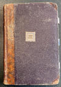 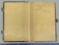 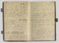


Dessen Tagebücher werden ebenfalls in Kopenhagen in dem "Antikvarisk-Topografisk Arkiv" aufbewahrt, worüber ich bei meinem Besuch am 27.09.2022 diese Fotos anfertigen konnte.
Rasmus Henrik Kruse (*07.08.1796 - 30.05.1877, Landschaftsmaler - link-LIVES - Heirat 21.12.1851)
 Bildquelle:
Det Kgl. Biblioteks billedsamling - Lizenz:
Public Domain
Bildquelle:
Det Kgl. Biblioteks billedsamling - Lizenz:
Public Domain
hat zu dem Runenstein von Flejsborg in seinem Werk mit dem Titel "Beretning om tvende etc. ubekjendte Runesteene" von 1855 Anmerkungen zu dessen Platz und der Lesung der Inschrift erfasst. Dazu hat er eine Zeichnung beigelegt. Diese Unterlagen werden in Kopenhagen in dem "Antikvarisk-Topografisk Arkiv" aufbewahrt. Dorthin habe ich heute - 01.11.2024 - mal eine Anfrage gerichtet, ob man mir bitte dieses Material einscannen und übermitteln kann. Die Antwort ließ nicht lange auf sich warten. Die Zeichnung bekam ich heute - 04.11.2024 - von einem Mitarbeiter des Archivs - Tausend Dank Dánial - zugesandt, so dass ich sie hier präsentieren kann.
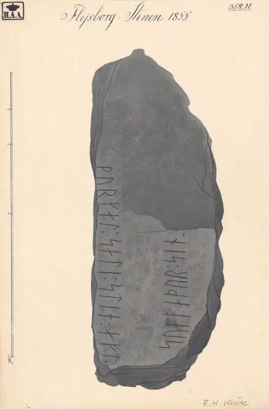
Lizenz: Public DomainDann ist die bereits oben gezeigte Zeichnung eindeutig doch nicht die von Architekt Gottlieb Bindesbøll, sondern nur eine Kopie dieser Zeichnung, die P. G. Thorsen von Rasmus Henrik Kruse erhielt, wie dies in einigen anderen Fällen auch so war.
Prof. P. G. Thorsen (*07.08.1811 - 06.05.1883, Bibliothekar, Runenforscher und Historiker - link-LIVES - Artikel: Levnedsbeskrivelser af de ved Københavns Universitets Firehundredaarsfest promoverede Doktorer, Illustreret Tidende 1882, Nr. 1235 - vom 27.05.1833 / Grabstein in Varde / Eheschließung in Varde am 19. August 1848)
 Fotografie
zw. 1863-1900 von
Fotograf Budtz Müller (*26.12.1837 -
30.12.1884) -
Det Kgl. Biblioteks billedsamling - Lizenz:
Public Domain
Fotografie
zw. 1863-1900 von
Fotograf Budtz Müller (*26.12.1837 -
30.12.1884) -
Det Kgl. Biblioteks billedsamling - Lizenz:
Public Domain
hat in seinem Buch "De danske runemindesmærker beskrevne og forklarede, anden Afdeling, Jyllands Runemindesmærker, I. Afbildninger, 1879" eine Zeichnung von Prof. Julius Magnus Petersen (*04.09.1827 - 31.01.1917, Archäologischer Zeichner und Restaurator - link-LIVES - Bestattungsprotokoll)
 Bildquelle: Fotografie
von 1903 von Fotograf Marius Christensen
(*24.06.1874 -
25.06.1907) -
Det Kgl. Biblioteks billedsamling - Lizenz:
Public Domain
Bildquelle: Fotografie
von 1903 von Fotograf Marius Christensen
(*24.06.1874 -
25.06.1907) -
Det Kgl. Biblioteks billedsamling - Lizenz:
Public Domain
aufgenommen - Nr. 36 - Google Scan. In seinem Band II, Text, von 1880, finden sich dann seine Aufzeichnungen auf den Seiten 111-112. Darin erwähnt er auch einen Hinweis von Pastor Adam Christoffer Fabricius (*18.7.1822 - 24.8.1902, auch Historiker und Verfasser - link-LIVES - Eheschließung 05.05.1865 - Bestattungsprotokoll - Grabstein)
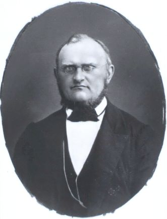
Bildquelle: Digitale Bildersammlung der Königlichen Bibliothek Kopenhagen - Fotograf unbekannt - Lizenz: Public Domainaus Ranum (ca. 10 km nw) an ihn aus dem Jahr 1862. Dessen zweiseitigen Brief vom August 1862 fand ich in P.G. Thorsens Hinterlassenschaft - siehe unten - in der Schachtel Nr. 4. Dieser hat ihm darin Informationen zu einer Frage bezüglich des ersten Wortes in jeder der Zeilen zukommen lassen.
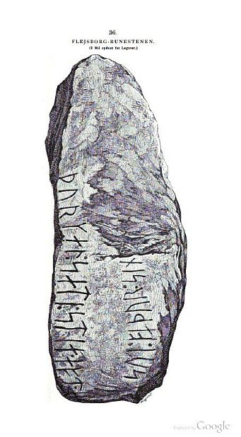

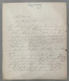

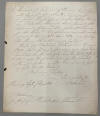
Adam Kristoffer Fabricius war u.a. auch Autor des reich illustrierten 2-bändigen Werkes "Illustreret Danmarkshistorie for folket" mit der ersten Ausgabe in den Jahren 1853-54 - Band I / Band II. Hier eine beispielhafte Wiedergabe aus Band 1, Seite 153, "Ansgar predigt das Christentum"
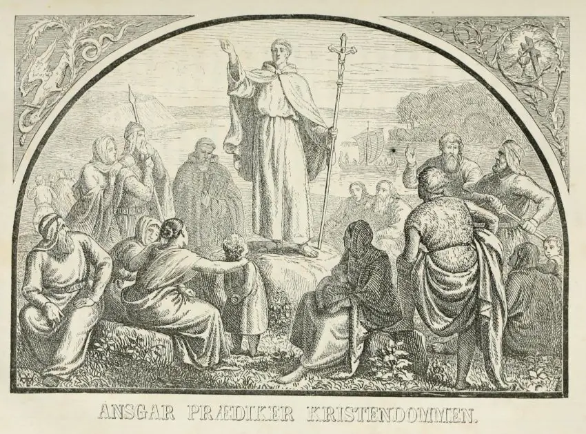
Lizenz: Public DomainP. G. Thorsens Nachlass (Bezeichnet als: P. G. Thorsens optegnelser, tegninger m.m. vedrørende runer og runemindesmærker - überführt aus der Kopenhagener Universitätsbibliothek 1929 - Gemäß Ministerialschreiben vom 04.03.1929; früher benannt als Additamenta 612 kvart - findet sich in der Königlichen Bibliothek unter NKS 3296 (in mehreren einzelnen Pappschachteln). In der Pappschachtel Nr. 17 hat sich diese Zeichnung von Magnus Petersen erhalten, die er auf den 01.07.1870 datiert hat. Daneben hat er aufnotiert: "ligger på gulvet i Våbenhuset - man lovede at rense og opstille den". Übersetzt: "Liegt auf dem Fußboden im Waffenhaus - man hat versprochen ihn zu reinigen und aufzustellen".

Prof. Ludv. F. A. Wimmer (*07.02.1839 - 29.04.1920, Philologe und Runenforscher - link-LIVES - Politiets registerblade - Bestattungsprotokoll)
 Bildquelle:
Fotografie zw. 1877-1900 von Fotograf Hansen & Weller
-
Det Kgl. Biblioteks billedsamling - Lizenz:
Public Domain
Bildquelle:
Fotografie zw. 1877-1900 von Fotograf Hansen & Weller
-
Det Kgl. Biblioteks billedsamling - Lizenz:
Public Domain
veröffentlichte seine Forschungsergebnisse in seinem großartigen Runenwerk "De danske runemindesmærker undersøgte og tolkede af Ludv. F. A. Wimmer, Andet Bind, Runestenene i Jylland og på øerne. 1899-1901 - Nr. 61, S. 283 - eigener Scan.
Er hat den Runenstein persönlich vor Ort am 08. August 1878 und nochmals am 19. Juli 1892 untersucht.
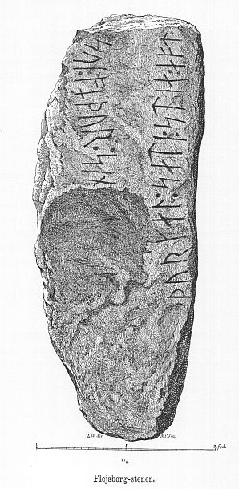
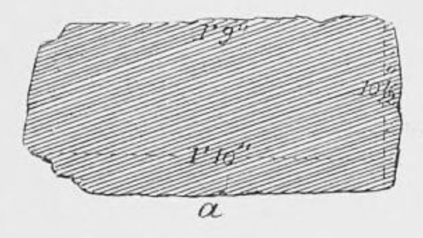
Ludv. F. A. Wimmer hat seine jahrelangen Aufzeichnungen der "Kgl. Bibliotek" in Kopenhagen überlassen. Ein Verzeichnis darüber wurde 1915 in Buchform herausgegeben - "Collectio runologica Wimmeriana: Fortegnelse over Ludv. F. A. Wimmers runologiske o. a. Samlinger i Det kgl. Bibliotek"
In seinen Unterlagen in der Königlichen Bibliothek befinden sich in "III - Originaltegninger af de danske Runemindesmærker, udførte paa Undersøgelsesrejserne af Magn. Petersen og kontrollerede paa Stedet af Ludv. Wimmer, samt Prøvetryk af de paa Grundlag af de nævnte Tegninger, Aftryk o. s. v. til De danske Runemindesmærker" udførte Afbildninger med Wimmers Rettelser" unter der Nummer 73 insgesamt vier Blätter.


Darunter diese Zeichnung von Magnus Petersen, die er auf den 08.08.1878 datiert hat und die ich am 27.09.2022 dort fotografieren durfte.

Erik Moltke (*04.04.1901 - 19.10.1984, Runologe, Historiker - link-LIVES)
 Bildquelle: Scan von Buchumschlag "Runerne i Danmark og ders
oprindelse" - Erik Moltke - 1976 - Lizenz:
CC-BY-SA
Bildquelle: Scan von Buchumschlag "Runerne i Danmark og ders
oprindelse" - Erik Moltke - 1976 - Lizenz:
CC-BY-SA
hat diese sw Fotografie am 16.04.1931 aufgenommen.
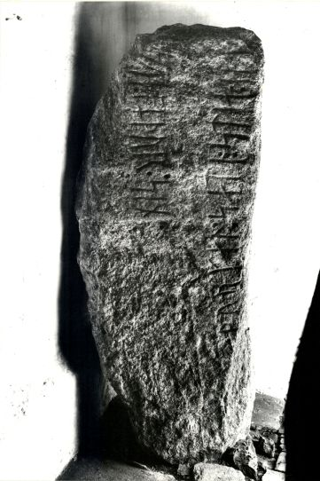
Quelle: Digitale Sammlung des Nationalmuseums in Kopenhagen - Lizenz: CC-BY-SA
Im Vorfeld zu dem 2016 erschienenen Buch von Lisbeth M. Imer (*1973, Runologin am Nationalmuseum Kopenhagen) "Danmarks Runesten - en fortælling" reiste sie mit dem Fotografen Roberto Fortuna zur Bestandsaufnahme durch die Lande. Dieser hat die Runensteine mit Schräglicht aufgenommen und darüber wirklich herausragende Fotos erzielt. Diese Fotografie stammt vom 20.03.2012.
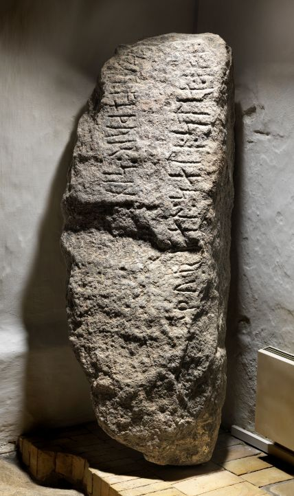
Quelle: Digitale Sammlung des Nationalmuseums in Kopenhagen - Lizenz: CC-BY-SA
Den Eintrag zu diesem Runenstein aus der dänischen Runen Datenbank im Internet kann man hier abrufen.
Die Informationen in "Fund og Fortidsminder" zu dem Runenstein finden sich hier. Darin ist inzwischen dieser Zustandsbericht des Steinrestaurators Leif Vognsen aus dem Jahr 2018 eingebettet.
Über diesen Link finden sich zu dem Runenstein Informationen des Forschungsprojektes "Runes" der Akademie der Wissenschaften zu Göttingen.
Über die Webseite www.biopix-foto.de kann man sich dieses Foto des Runensteins anschauen, bei dem die Runen mit roter Farbe nachgezeichnet und darüber die Lesbarkeit deutlich erhöht wurde.